The world of development is evolving rapidly, and artificial intelligence (AI) is playing an increasingly crucial role in developers’ daily lives. With the rise of AI tools, R developers can now automate repetitive tasks, speed up their workflow, and even discover new methods for analysis and visualization.
I’ll focus on a specific AI tool that can significantly assist R developers: GitHub Copilot. Copilot offers a variety of features, from code generation to programming assistance, automatic documentation, and problem-solving.
I’ll also give a quick feedback about my usage of ChatGPT.
GitHub Copilot
GitHub Copilot is an AI tool that assists developers in their daily work by generating code and other code-related elements (such as documentation) based on context. Copilot can be used as an extension for VSCode. Since the release of version 2023.09.0, GitHub Copilot is also available in RStudio. Copilot can be used to generate R code, comments, unit tests, documentation, and more.
What Are the Prerequisites for Using GitHub Copilot?
To use GitHub Copilot, you need a GitHub account and a Copilot license. This tool is paid (see pricing options), but students, teachers, and maintainers of popular open-source projects can get a free license.
GitHub Copilot in RStudio
To use GitHub Copilot in RStudio, install the latest version of RStudio (2023.09.0 or later). Once installed, activate Copilot by going to Tools > Global Options > Copilot and checking the box Enable GitHub Copilot.
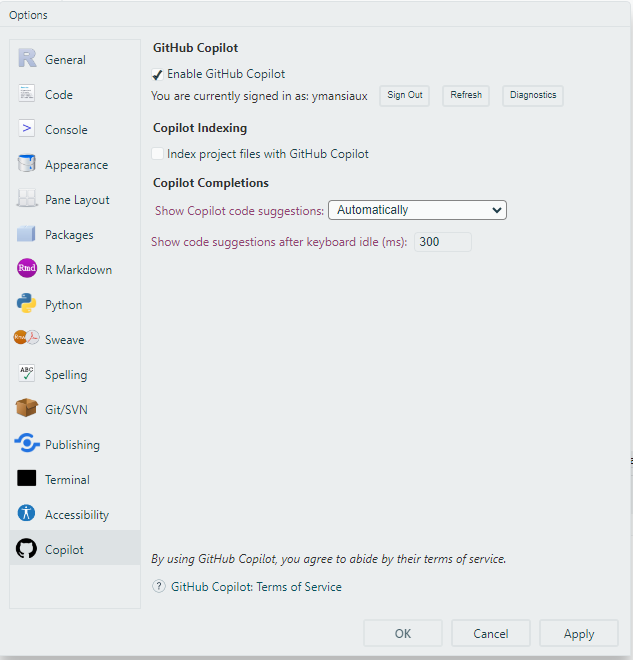
If you want Copilot to base its suggestions not only on the current file but also on other project files, check the box Index project files with GitHub Copilot.
GitHub Copilot in VSCode
To use GitHub Copilot in VSCode, install the GitHub Copilot extension. Once the extension is installed, enable Copilot by logging into your GitHub account.
GitHub Copilot in Positron
Currently, GitHub Copilot is not available in Positron.
GitHub Copilot for R Development
We’ll review GitHub Copilot’s features for R development. Some features are available in both RStudio and VSCode, while others can only be used in VSCode.
Code Completion: Writing Functions
Let’s say we’re developing an R package and want to write a function to clean text by removing spaces and special characters.
We start with a comment describing the function’s intent and provide an empty function skeleton:
# Function to clean text by removing spaces and special characters
clean_text <- function(text) {
}After a few seconds, Copilot suggests an implementation for clean_text. Suggestions appear in gray and can be accepted by pressing the Tab key.
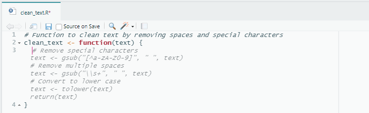
The initial function comment isn’t mandatory, but it helps Copilot better understand the context and suggest more relevant code.
Code completion also works seamlessly in VSCode.
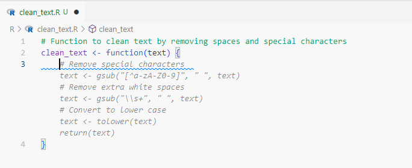
Interestingly, in both cases, a step to convert text to lowercase is suggested, even though I didn’t request it. This could be useful, but make sure this step fits your use case. Remember, Copilot isn’t perfect and may sometimes generate incorrect or inappropriate code. Always review and modify the generated code as necessary.
You can continue in RStudio to generate the function’s documentation with Roxygen tags, for instance. Again, starting with a comment indicating your intention allows Copilot to suggest documentation.
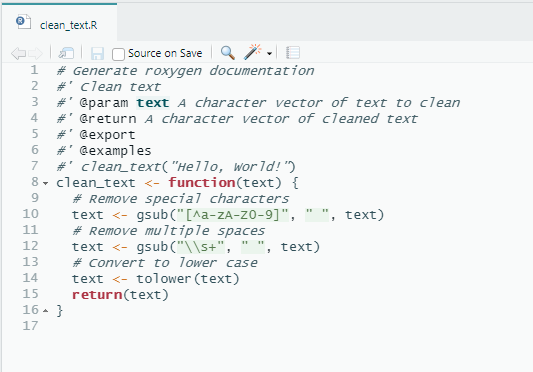
RStudio usage is limited to code completion, so we’ll switch to VSCode to showcase more advanced features and a fuller development experience.
How to Access GitHub Copilot Features in VSCode?
There are multiple ways to access Copilot’s interface in VSCode. Right-clicking on an open file allows you to access the Copilot option in the context menu. You can also use the shortcut Ctrl + Shift + P (on Windows) to open the command palette, then type Copilot to access the interface. Recently, a Copilot icon was also added to the VSCode toolbar.
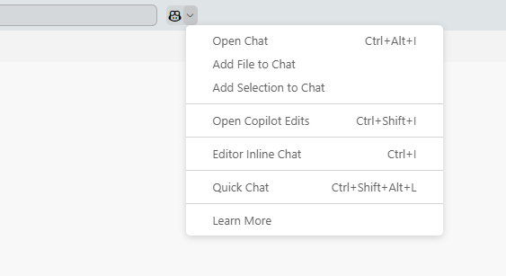
Chat
Copilot can be used as a chatbot to get information on functions or packages, or to write code, as we did before.
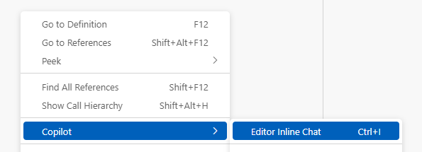
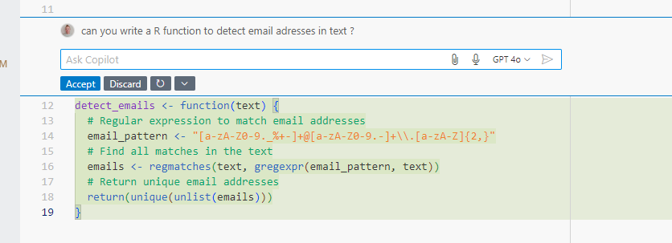
Again, providing as much context as possible will lead to more relevant suggestions.
You can also use the chat to modify the code Copilot initially generated, for example, to change the packages used.
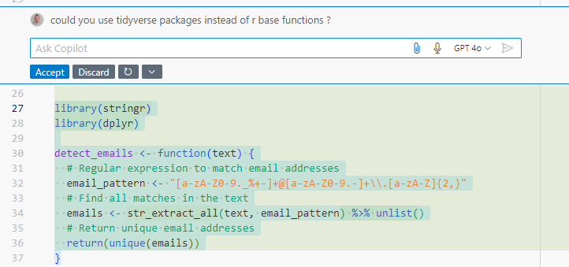
Code Explanation
Copilot can also explain code. For example, if you don’t understand some code, you can ask Copilot to explain it.
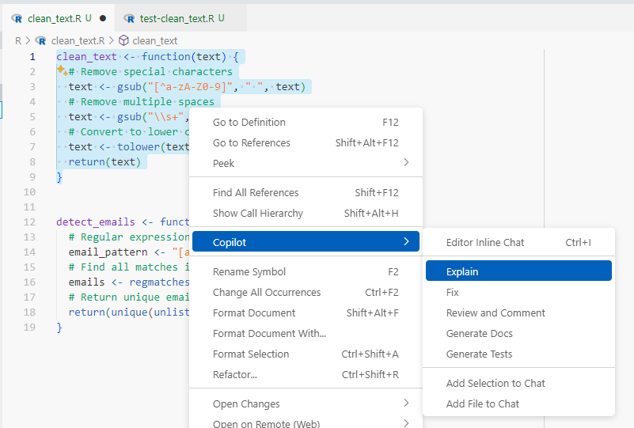 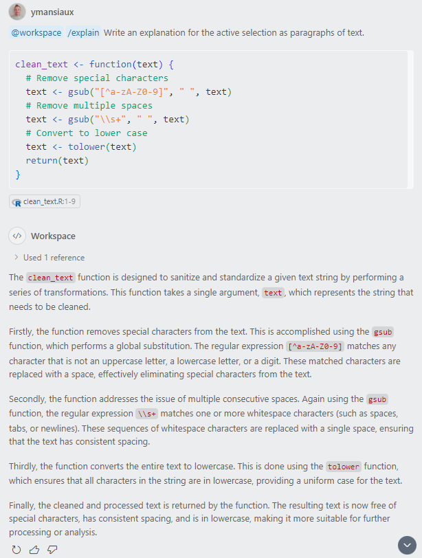
Note: This feature is also accessible via chat by typing “/explain”.
Code Correction
Following the same process, select the “Fix” option to detect errors in the code. Here, Copilot didn’t detect an error but suggested an enhancement. Our code didn’t initially trim leading and trailing spaces. Copilot offers a solution to fix this.
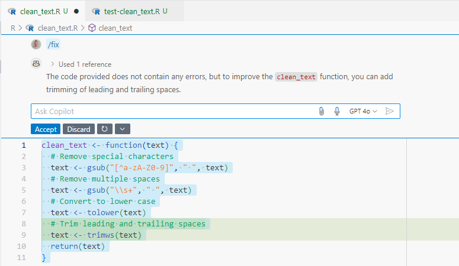
Note: This feature is also accessible via chat by typing “/fix”.
Code Review
The “Review and Comment” feature suggests improvements for style or performance.
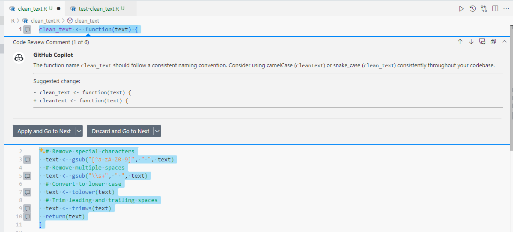
Documentation
The “Generate Doc” feature creates a Roxygen documentation skeleton for the function. The generated documentation is often generic, so you’ll usually need to complete it, particularly for parameter explanations or reproducible examples. For instance, it may omit an @export tag, which could cause issues during a devtools::check() of your package!
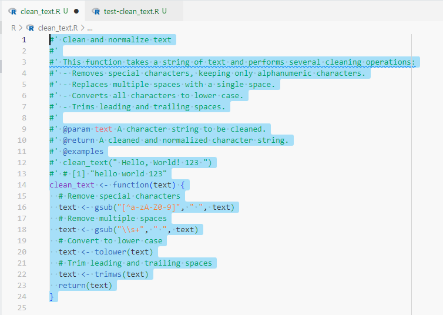
Note: This feature is also accessible via chat by typing “/doc”.
Unit Tests
The “Generate Tests” option generates unit tests for the function. It works well but has the drawback of adding the test file in the package’s R/ folder. You’ll need to move the content into a chosen file in the testthat/tests/ folder.
Note: This feature is also accessible via chat by typing “/tests”.
What About {shiny}?
Though we’ve focused on R package development, Copilot can also be used to develop Shiny applications. For example, to generate a simple Shiny app, start with a comment describing the app, and let Copilot generate the code. This is very useful for quickly setting up a UI, but as always, you’ll need to refine the code to meet specific needs.
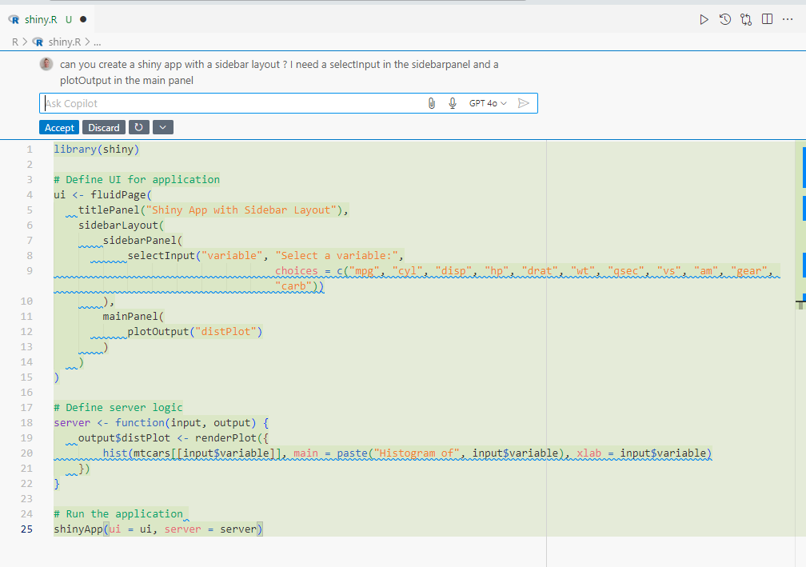 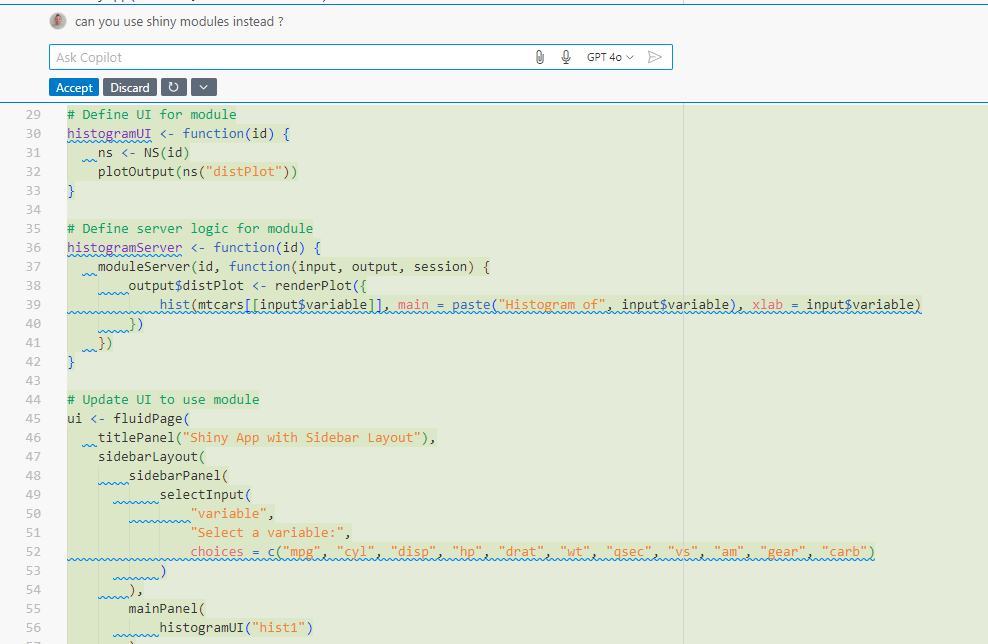
For a Shiny development assistant, you can also check out ShinyAssistant.
Summary of the R Developer Experience with GitHub Copilot
GitHub Copilot is a powerful tool that can greatly accelerate R package development. It can generate code, documentation, unit tests, and more. However, remember that Copilot isn’t perfect and can sometimes produce incorrect or unsuitable code. It’s essential to review and adjust the generated code as needed. It’s equally important to revise generated documentation and tests for accuracy and relevance.
To ensure sufficient unit tests, it’s recommended to check package coverage using the {covr} package.
Moreover, there’s no magic behind this tool—GitHub Copilot bases its suggestions on the current file’s content and other project files. The more precise the context, the more relevant the suggestions will be. Taking extra care with function and parameter names makes suggestions as suitable as possible (this is true for development even without Copilot!).
How can I use ChatGPT as an R developer?
I also often rely on ChatGPT for R-programming related tasks.
More often, I’ll use ChatGPT in advance of a task, to compare its suggestions with the way I would have approached the problem. This allows me to see if I’ve forgotten something, or if I couldn’t have done things differently.
I’ll also use his knowledge to give me information on a package I don’t know, or to give me examples of code. It’s a great complement to the official documentation.
In the same way, I’ll ask him to explain errors I encounter, or concepts I don’t understand.
Finally, as with Github Copilot, the key lies in the quality of the question asked. The more precise the question, the more relevant the answer.
I often tend to start my queries with: “I’m an R developer and I prefer using tidyverse packages. I’d like to know what I can do to…”. Telling him if you’re a user of specific packages can help refine the suggestions.
Explain how a conversational assistant can answer specific questions, help with debugging, generate code examples and provide detailed explanations of errors or package usage.
Did you know that some R-specific GPT’s are available?
I recently discovered that some R-specific GPT’s are available. They are trained on R-specific data and can provide more relevant answers to R-related questions. I haven’t had the opportunity to test them yet, but I’m looking forward to it.
Here is the way to access them:
You should click on “Explore GPTs” in the ChatGPT interface, then type “R programming” in the search menu.
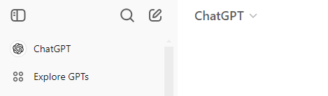
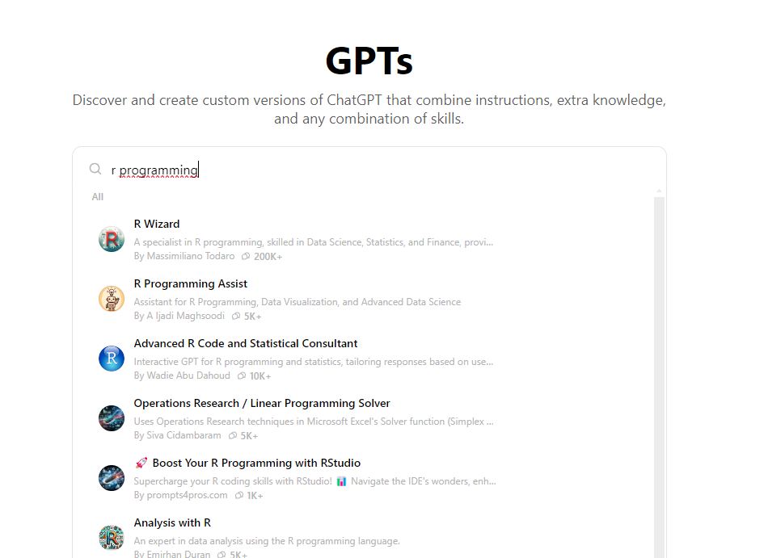
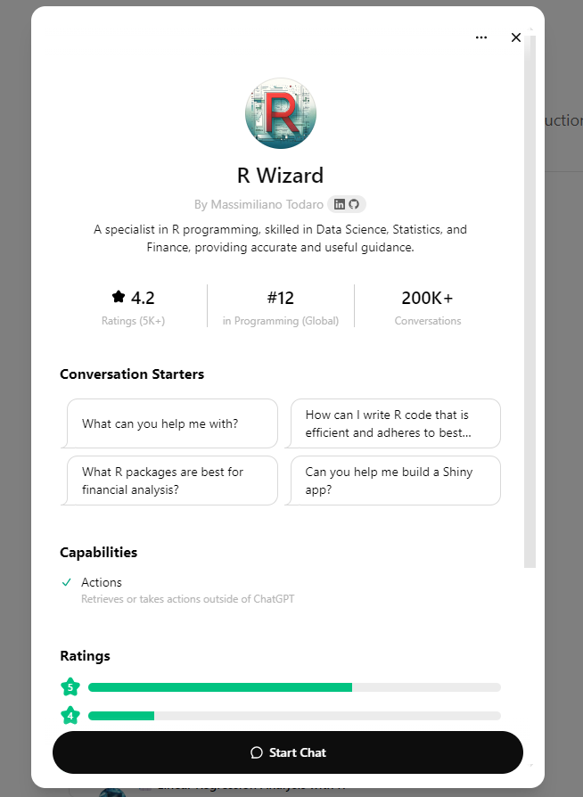
Among the many R-specific GPT’s available, I recommend using R Wizard, which seems to be the most popular among R developers.
Conclusion
For R programmers, GitHub Copilot and ChatGPT can complement each other effectively. Copilot shines for in-context code generation, while ChatGPT is ideal for answering questions, exploring R libraries, and understanding errors. By combining these tools, R developers can boost productivity, streamline repetitive coding tasks, and expand their knowledge—all while enhancing their coding efficiency and accuracy.
The main takeaway is that these tools are here to help you, not replace you. They can save you time and provide new insights, but they can’t replace your expertise and creativity. Always review the generated code, documentation, and tests to ensure they meet your project’s requirements.
Have fun !
Ressources
- Github Copilot documentation
- Github Copilot in RStudio
- VSCode extension for Github Copilot
- R Wizard GPT
I also thank my friend Arthur Bréant for giving me precious tips on how to use the tools presented in this article.